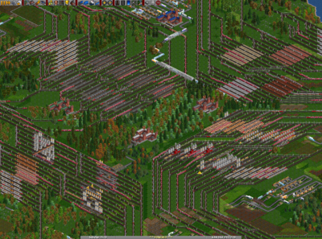
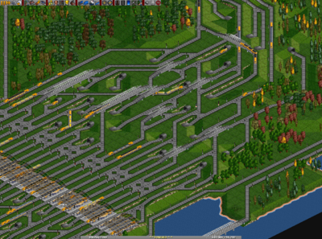
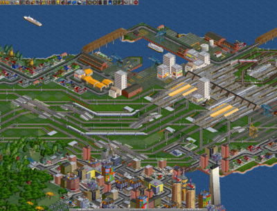

Main station
Our networks usually have a single drop station for every cargo type or even one for multiple cargo types combined. With thousand or more trains running you can figure these stations have to be efficient and high capacity. Over the years we developed many types of main stations, each suitable for another purpose. First we'll look into the function of main stations and the standards they should meet for different purposes, then we will look into some common designs more deeply.
Recommended article: Advanced building reuve 07 - Stations
Contents
Drop & Pickup seperation
One of the most important jam-preventing measurements we take is to keep drop and pickup stations separated. If we would not do this the situation could appear where all platforms are taken by secondary goods trains waiting to fully load, which will obviously never happen when there is no platform left for primary trains to unload.
Breaking & Accelerating space
You should keep this in mind when building any mainline station. Trains slow down when they enter a station, if trains are very close to each other one might be stopped when the train before it enters a station. This can be solved by having a few empty tiles in front of the station. The amount of empty tiles you need depends on both trainlength and train speed, the longer the length and the higher the speed, the more tiles you need. For long maglevs the number of tiles needed will be close to the actual length of the train. For long steamers a third of the trainlength will do. For maximum efficiency you'll also want a few empty tiles after the station to allow the train to accelerate before merging with the other trains. It is advisable to make this at least as long as the actual train; this way a train will never block the platform it just left when it has to wait to merge in with the other trains.
Different styles
As said, there are many different styles of main stations. Below I'll introduce them and name some pros and cons and when to use them. Each station can be categorized in one of two main categories: RoRo or Terminus. RoRo stands for Roll-on-Roll-off, which means a train enters a platform at one side, loads/unloads and leaves the platform at the other side. Terminus stations terminate a line; a train leaves a platform at the same side it entered. RoRo stations have a higher capacity than terminus stations; even though terminus stations' capacity is dramatically increased thanks to some clever designs, RoRo stations will always have a higher capacity. That said, the increased capacity for RoRo stations sometimes doesn't weigh up against the extra space it consumes. In practice you'll often find that RoRo stations are used mostly in cargo games and termini are most common in pax games.
RoRo with dedicated platforms per track
This type of station has the highest capacity. Period. No need to argue; there is no way you'll ever create something more efficient than a station that has a dedicated set of platforms for every incoming track. This station will be the best design when you have dense traffic and plenty of space to build your station.




However, there are some downsides to this design. The most important one is that it does not use its platforms efficiently; most of the platforms will be empty most of the time, only at surge times all platforms for a single track might be taken.This can be greatly reduced by introducing all-to-all acces for the incoming tracks.
All-to-all RoRo
All-to-all means that trains coming in from any track will be able to chose from any platform. As it is unlikely that all tracks will experience their peak traffic levels at the same time this approach requires less platforms, however, the construction becomes more complex.




Pre-balancing
This is a technique that basically combines the two designs above. It is rarely seen, but deserves more attention. This technique allows you to dramatically decrease the complexity of the all-to-all construction. As long as the amount of tracks during the pre-balancing process is never less than the amount of input tracks you should not get into bottleneck issues.


Pre-signal bypass station
This is an entry-style that bypasses the gaps pre-signalling can cause, especially on bigger drop stations with short, fast trains. The article dedicated to PSB (not to be confused with PBS, Path-Based Signalling) provides more in-depth information about this style.
Regular Terminus
You'll probably know this station style; it's one of the most basic in OpenTTD. It consists of a number of platforms connected to a construction that serves as both entry and exit. Below you can see an example of this basic terminus.


Pros for this design are that it is very easy to build and very small. However, there are some major cons; the most important one being very low efficiency and capacity. The cross in front of the station serves as both exit and entry for the station, because it consists of only one block trains leaving the station will block trains from entering and vice versa. Using PBS will make the capacity a bit higher but it will still be pretty poor and therefore only suitable for remote and low-usage pickup stations. This design's efficiency decreases when more platforms share the same block. The one in the picture above has 2 platforms sharing a block, it's pretty easy to make a station with more platforms sharing a block but as said, this will decrease capacity. You should try to avoid using this type of station, especially ones with more than 3 platforms sharing a block. A way to make this station more efficient is to have multiple sub-stations connected to each other by a non-blocking entry, like the one shown below.


This design is still pretty simple and has a small footprint, this makes it suitable for bigger primary pickup stations and especially suitable in passenger games, usually for medium traffic density stations. However, this design still has the major drawback all basic termini have; it has multiple platforms sharing the same block. If you still want the small footprint of a terminus station but one with a capacity close to a RoRo, you should go with dedicated entries and exits for each platform.
Terminus with dedicated entries & exits
This station design, originally invented by Osai combines the best of both terminus and RoRo stations. It has the high capacity typical for a RoRo and the small footprint that comes with terminus. However, as you might have expected, this design is complex and hard to build.
The main idea behind this is to have an entry and an exit track dedicated to a single platform, rather than sharing one with others like normal termini do. Below you can see a two-platform station using this design.


For maximum result you'll want trains to be able to completely leave a platform before there ever is a chance of getting blocked. The design below is Osai's first example of his concept. It makes clever use of bridges over tunnel entries to make long exits, also the incoming tracks split before they tunnel under the exit and form a waiting bay.


The cacacity of this design is very close to that of a RoRo, the only factor making it slightly less efficient is the one shared tile right in front of the platforms. Especially with longer trains, however, this flaw is to be neglected. Because of its small footprint and high efficiency this design is very suitable for high-throughput passenger terminals, such as the one below.



Another Non-blocking Terminus Design
This type of terminus station started appearing in Public Server Game 200. With the clever use of PBS, this style of terminus station has near or equal efficiency of a RoRo station. One disadvantage of this style is need for a flat area for the size of the platforms. For mountainous map or area, standard terminus or RoRo station may be of better fit.


See also
Categories: StationsAdvanced Networking